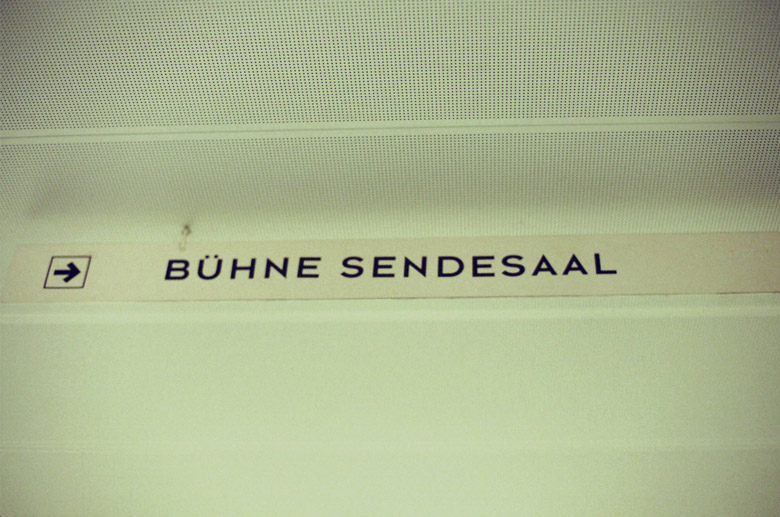

Johnny Jungle  Info Date: 16.12.2008 Location: RadioKulturhaus, Vienna Photos by: Markus Schmeiduch Cameras: Yashica FX-70, Nikon F1 Film: Kodak Color & Portra NC 400 Thanks to Chris and the other girls, Thomas & Christoph Jarmer, Florian Parzer, Rene Mühlberger & Daniel Gebhart.